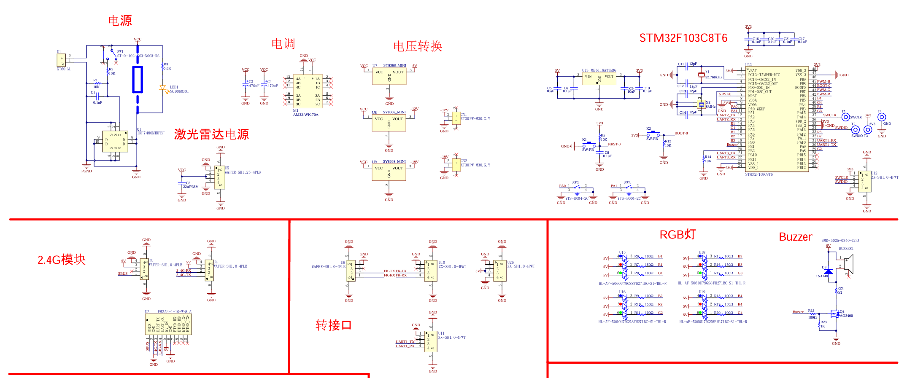

MCU 二次开发指南¶
硬件说明¶
STM32 相关硬件连接原理图：

工程用途¶
本工程用于实现机载 MCU 与 LubanCat 之间的串口通信，并根据状态反馈实时控制分电板 RGB 灯。
- 通信链路：UART 双向通信，LubanCat 发状态，MCU 解析后执行动作。
- 灯光控制：RGB 由 GPIO 高低电平直接驱动（非 PWM）。
- 运行环境：STM32F1 + HAL，使用 MDK-ARM（Keil）构建与调试。
关键模块¶
- 串口通信与协议：
Core/Src/usart.c、Core/Inc/usart.h - RGB GPIO 控制：
Core/Src/gpio.c、Core/Inc/gpio.h - 主循环与初始化：
Core/Src/main.c - 中断处理：
Core/Src/stm32f1xx_it.c、Core/Inc/stm32f1xx_it.h
工程目录¶
USART.ioc：CubeMX 配置。USART.uvprojx/USART.uvoptx：Keil 工程文件。startup_stm32f103xb.s：启动汇编与向量表。Core/Inc：头文件目录。Core/Src：源码目录。Drivers/CMSIS、Drivers/STM32F1xx_HAL_Driver：HAL 与芯片底层驱动。MDK-ARM、USART：构建输出与中间文件。
快速开发路径¶
- 从
Core/Src/main.c入手，明确初始化与主循环流程。 - 在
usart.c扩展串口协议，必要时同步更新usart.h。 - 在
gpio.c实现灯控策略（开关/颜色切换）。 - 需要事件驱动时，优先使用中断流程（
stm32f1xx_it.c）。 - 需要调整底层时钟或 DMA 时，查看
stm32f1xx_hal_conf.h与 HAL 驱动实现。 - 使用
STLink完成下载与调试。
外设驱动要点¶
按键驱动（PA0、PA1）¶
- 当前有主循环轮询示例。
- 建议改为 EXTI 外部中断，减少漏检和抖动。
void HAL_GPIO_EXTI_Callback(uint16_t GPIO_Pin)
{
if (GPIO_Pin == GPIO_PIN_0) {
// 处理 PA0 按键事件
} else if (GPIO_Pin == GPIO_PIN_1) {
// 处理 PA1 按键事件
}
}
建议在中断回调中增加 10-50 ms 消抖策略（定时器或时间过滤）。
蜂鸣器驱动（TIM3_CH4，约 4kHz）¶
TIM3_CH4映射PB1。- 当前参数：
Prescaler = 72、Period = 227，频率约 4.33 kHz。 - 占空比可设为约 50%（比较值约 114）。
HAL_TIM_PWM_Start(&htim3, TIM_CHANNEL_4);
__HAL_TIM_SET_COMPARE(&htim3, TIM_CHANNEL_4, 114);
串口驱动（USART1，115200，中断）¶
- 在
usart.c完成huart1初始化（8N1，115200）。 - 在
main.c使用HAL_UART_Receive_IT做单字节中断接收。 - 若有高吞吐需求，建议改 DMA 或环形缓冲区。
调试与风险提示¶
- RGB 通道分散在多组 GPIO，上层逻辑建议集中在
gpio.c/.h维护，避免多处分散改动。 TIM4仍有 PWM 配置，若后续改为 PWM 调光，注意避免与现有 GPIO 控制冲突。- 调试蜂鸣器建议用示波器直接查看
PB1波形。
烧录故障排查（SWD/JTAG）¶
当出现 *** SWD/JTAG Communication Failure *** 时，按顺序排查：
- 检查
PA13/PA14是否被其他外设复用。 - 在 Keil 中将 SWD 下载时钟降到
100 kHz或更低。 - 必要时进入 Bootloader 模式后再下载。
- 仍失败时检查 STLink 驱动、焊接与接触质量、芯片是否物理损坏。